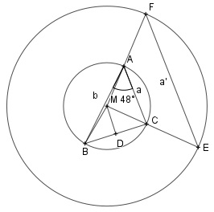

Aufgabe 110 Wie groß ist die Seite a' eines Dreiecks mit einem Umkreisradius von 4,5 cm, das ähnlich ist dem Dreieck mit a = 2,8 cm, b = 3,9 cm, γ = 48°?  γ ist der Umfangswinkel über der Sehne BC. --> Der zugehörige Mittelpunktswinkel α = ∢BMC = 2 * 48° = 96° ∢DMC = α/2 = 48° Kosinussatz im Dreieck ABC: BC² = a² + b² - 2 * a * b * cos 48° BC² = 2,8² + 3,92 - 2 * 2,8 * 3,9 * cos 48° BC² = 8,436 cm² |√ BC = 2,9045 cm Im rechtwinkligen Dreieck DCM gilt: BC/2 sin 48° = ------ |*MC MC 2,9045 sin 48° * MC = --------- |: sin 48° 2 MC = 1,954 cm = Radius r des kleineren Umkreises Strahlensatz: r' a' --- = --- |*a r a 4,5 * 2,8 a' = ----------- = 6,45 cm 1,954